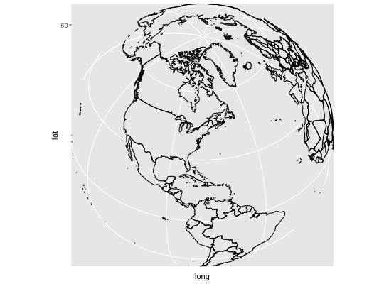

coord_map(projection = "mercator", ..., orientation = NULL, xlim = NULL, ylim = NULL)coord_quickmap(xlim = NULL, ylim = NULL, expand = TRUE)
mapproject for listmapprojectc(90, 0, mean(range(x))). This is not optimal for many
projections, so you will have to supply your own. See
mapproject for more information.TRUE, the default, adds a small expansion factor to
the limits to ensure that data and axes don't overlap. If FALSE,
limits are taken exactly from the data or xlim/ylim.The representation of a portion of the earth, which is approximately spherical,
onto a flat 2D plane requires a projection. This is what
coord_map does. These projections account for the fact that the
actual length (in km) of one degree of longitude varies between the equator
and the pole. Near the equator, the ratio between the lengths of one degree
of latitude and one degree of longitude is approximately 1. Near the pole, it
is tends towards infinity because the length of one degree of longitude tends
towards 0. For regions that span only a few degrees and are not too close to
the poles, setting the aspect ratio of the plot to the appropriate lat/lon
ratio approximates the usual mercator projection. This is what
coord_quickmap does. With coord_map all elements of the
graphic have to be projected which is not the case here. So
coord_quickmap has the advantage of being much faster, in
particular for complex plots such as those using with
geom_tile, at the expense of correctness in the projection.
This coordinate system provides the full range of map projections available
in the mapproj package.
if (require("maps")) { nz <- map_data("nz") # Prepare a map of NZ nzmap <- ggplot(nz, aes(x = long, y = lat, group = group)) + geom_polygon(fill = "white", colour = "black") # Plot it in cartesian coordinates nzmap # With correct mercator projection nzmap + coord_map() # With the aspect ratio approximation nzmap + coord_quickmap() # Other projections nzmap + coord_map("cylindrical") nzmap + coord_map("azequalarea",orientation=c(-36.92,174.6,0)) states <- map_data("state") usamap <- ggplot(states, aes(long, lat, group = group)) + geom_polygon(fill = "white", colour = "black") # Use cartesian coordinates usamap # With mercator projection usamap + coord_map() usamap + coord_quickmap() # See ?mapproject for coordinate systems and their parameters usamap + coord_map("gilbert") usamap + coord_map("lagrange") # For most projections, you'll need to set the orientation yourself # as the automatic selection done by mapproject is not available to # ggplot usamap + coord_map("orthographic") usamap + coord_map("stereographic") usamap + coord_map("conic", lat0 = 30) usamap + coord_map("bonne", lat0 = 50) # World map, using geom_path instead of geom_polygon world <- map_data("world") worldmap <- ggplot(world, aes(x=long, y=lat, group=group)) + geom_path() + scale_y_continuous(breaks = (-2:2) * 30) + scale_x_continuous(breaks = (-4:4) * 45) # Orthographic projection with default orientation (looking down at North pole) worldmap + coord_map("ortho") # Looking up up at South Pole worldmap + coord_map("ortho", orientation = c(-90, 0, 0)) # Centered on New York (currently has issues with closing polygons) worldmap + coord_map("ortho", orientation = c(41, -74, 0)) }